← 返回阅读库 · 原论文目录
论文讲解阅读文档 · 机器人学 · v126
XSkill Cross Embodiment Skill Discovery[2307.09955]
视频时长 00:18:49；讲解文字 8,302 字符；提取讲解画面 135 张。按视频原顺序阅读，每段文字保留时间戳。
文字来自整段视频的自动语音转写，按自然停顿分段，并与 PPT / 论文页面 / 演示画面对齐。未将讲解压缩为摘要；术语、数字和口述公式请结合画面及原论文核对。 阅读稿已校正规范部分明确术语误识别；原始逐字稿和每处修改记录另行保留。
讲解画面为源视频截图（640×360），不是可编辑 PPT 文件。全片按每秒 2 帧扫描内容变化，逐步展开页保留；连续动画保留代表画面。清晰度受源视频限制。
下载完整资料包 · 含离线 HTML、PDF、Word、全部 PPT 画面和字幕。
原论文与材料
XSkill: Cross Embodiment Skill Discovery · 下载完整 PDF（20 页）
按时间阅读
00:00:00–00:00:09 · 画面 001
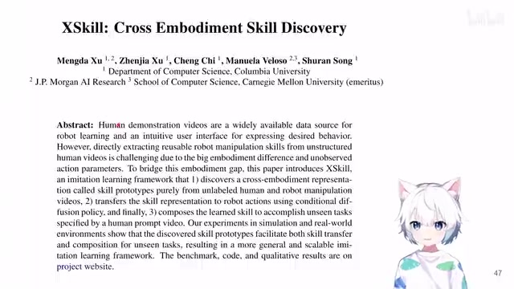
00:00:00–00:00:09 · 画面 001大家好啊，今天我们来快速水一篇论文 X-Skill Cross-Embodiment Skill Discovery那这一篇呢,想要解决的一个问题呢,就是我在做完 Imitation Learning 之后,我的机器学到了如何去解一个任务,那当现在我有一个新的任务,想要去让这个机器做的时候,我并不是说额外的再去遥控我的机器,去收集新的数据,而是说呢,我拿一个人类演示的去解一个新的任务的这样一个视频给机器去看,那机器看了这个视频之后,了解了这个新的任务是要怎么操作的,
00:00:09–00:00:40 · 画面 002
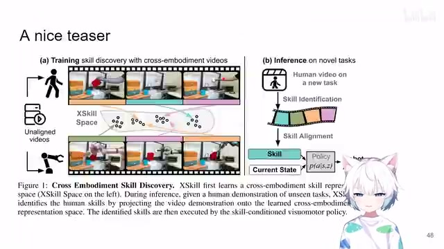
00:00:09–00:00:40 · 画面 002然后呢,直接做一个这个 One Shot Transfer,直接就按照这个人类的这个视频,就把这个新的任务就给它做了,那么这个呢,就是本文想要研究的问题,那么我把这个头挪开一下,你看到,那么在我们生成这个 Policy 的过程中,对吧,作者呢,不仅使用了这个 CurrentState,同时呢,使用了一个 Skill,我们后面会详细讲这个 Skill 是什么,那通过使用这两个项,然后呢,让这个 Robot 产生了这个 Action,
00:00:40–00:00:45 · 画面 003
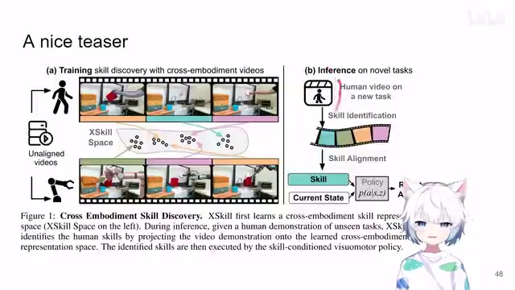
00:00:40–00:00:45 · 画面 00300:00:45–00:01:07 · 画面 004
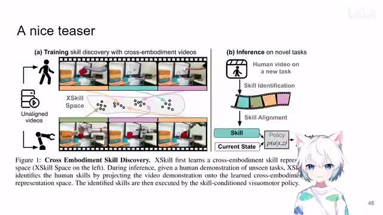
00:00:45–00:01:07 · 画面 004能够去达成根据人类这个给定的视频中的新的任务,去达成这样的一个任务,那么这个呢,就是本文核心的要解决的一个问题,
00:01:07–00:01:08 · 画面 005
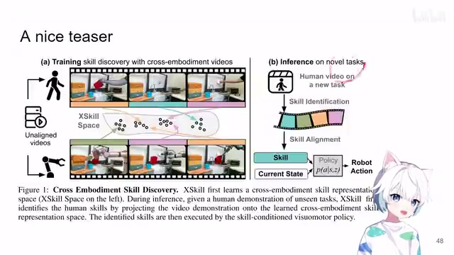
00:01:07–00:01:08 · 画面 00500:01:08–00:01:11 · 画面 006
00:01:08–00:01:11 · 画面 00600:01:11–00:01:12 · 画面 007
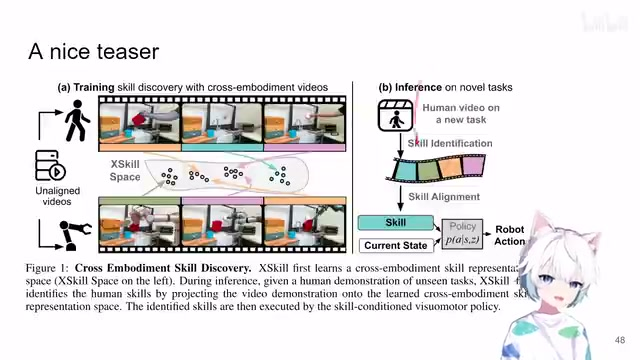
00:01:11–00:01:12 · 画面 00700:01:12–00:01:14 · 画面 008
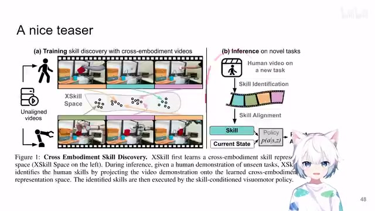
00:01:12–00:01:14 · 画面 00800:01:14–00:01:21 · 画面 009
00:01:14–00:01:21 · 画面 009下面我们就来看作者是怎么样具体的把这个问题给做出来的，我们来看到这个页，首先呢，作者的这个核心的思路呢包括三个步骤，我们收容，我们控制，我们保护，不对，不是这样的是 discovertransfer 和这个 compose
00:01:21–00:01:46 · 画面 010
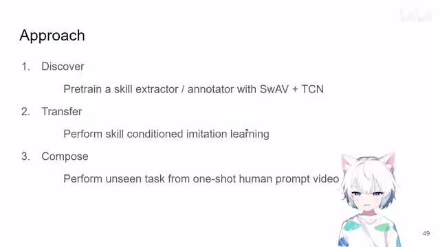
00:01:21–00:01:46 · 画面 010discover 这个阶段呢，相当于它是用我们已经有的这些数据集去用这个自监督的手段，因为这些所有的数据集它都是没有标签的嘛，所以呢，它用自监督的手段去训练一个好的这个 feature extractor 或者叫 skill extractor，然后呢，用这个训练好的网络在我们的数据集中提供一些 feature，我们把这些 feature 加入到我们标准的 imitation learning 当中
00:01:46–00:01:47 · 画面 011
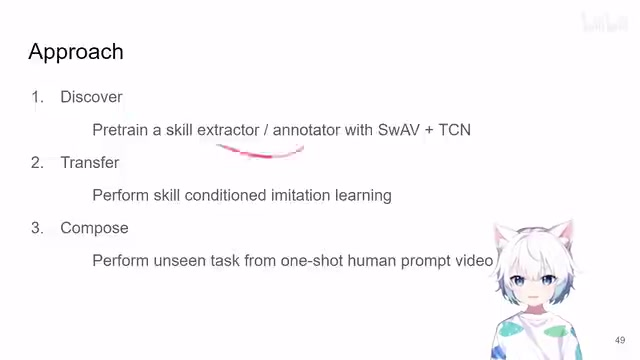
00:01:46–00:01:47 · 画面 01100:01:47–00:02:05 · 画面 012
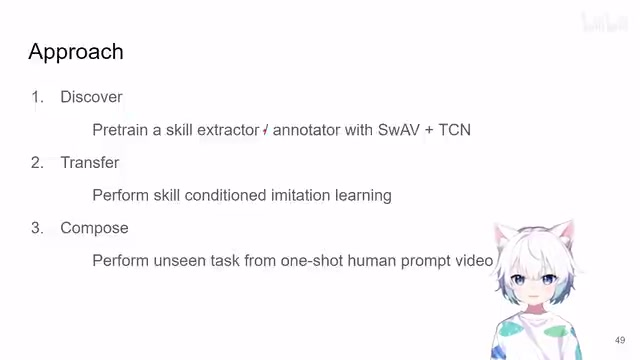
00:01:47–00:02:05 · 画面 012这些 feature 就是所谓的 skill，我们把它加入到标准的 imitation learning 当中，那这样子我们机器人学出来的这个 policy 不仅 condition 我们当前的这个 observation，同时呢也会根据我们输入的这个 skill 这个条件的不同来做出它相应的这个动作，那么最后呢就是 compose，我一个新的任务进来之后，我同样的我用这个上面训练好的这个 extractor 把它的这个 skill 给它提出来，那这个就是我们新的 condition
00:02:05–00:02:06 · 画面 013
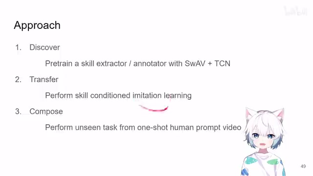
00:02:05–00:02:06 · 画面 01300:02:06–00:02:14 · 画面 014
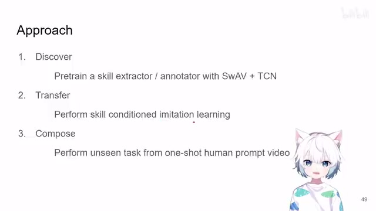
00:02:06–00:02:14 · 画面 01400:02:14–00:02:15 · 画面 015
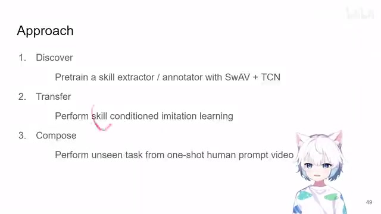
00:02:14–00:02:15 · 画面 01500:02:15–00:02:21 · 画面 016
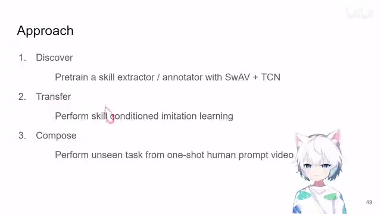
00:02:15–00:02:21 · 画面 01600:02:21–00:02:41 · 画面 017
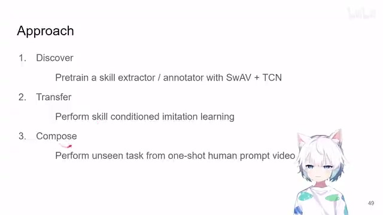
00:02:21–00:02:41 · 画面 017把这个新的 condition 加到我们当前的这个 policy 里面，我们就希望我的这个 policy 能够在不改变参数的情况下依照着这个新的 scale 就把这个任务给它执行好了，也就是说这个 unseen task from one shot
00:02:41–00:02:42 · 画面 018
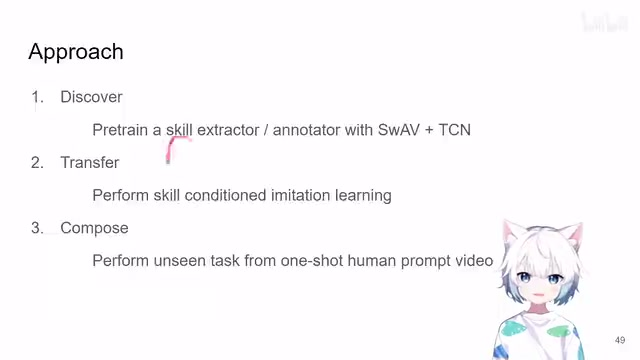
00:02:41–00:02:42 · 画面 01800:02:42–00:02:52 · 画面 019
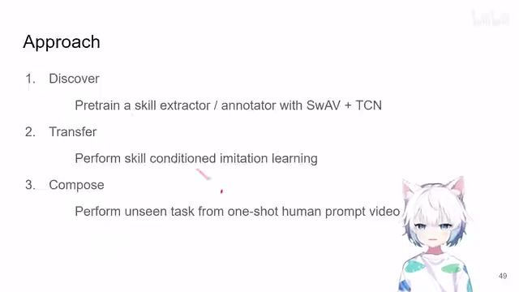
00:02:42–00:02:52 · 画面 019这个 human prompt video 就是这里这个 demonstration 这个 video，那么这个呢是本文的一个核心的一个逻辑，那么下面呢我们来看作者的具体实现，那么当然剧透一下呢，你会发现本文使用的技术呢并不是什么新技术，全部都是过去已经有了成熟的技术的组合
00:02:52–00:02:53 · 画面 020
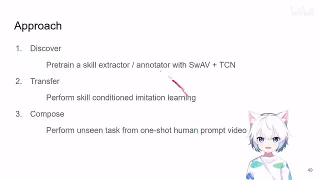
00:02:52–00:02:53 · 画面 02000:02:53–00:03:06 · 画面 021
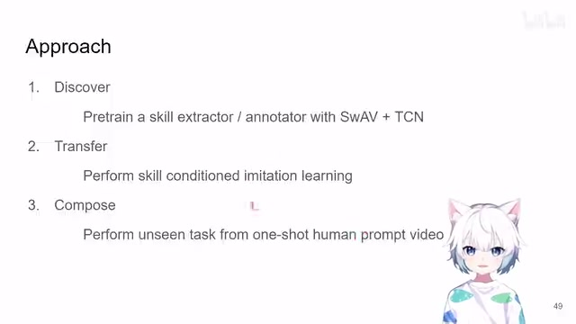
00:02:53–00:03:06 · 画面 02100:03:06–00:03:23 · 画面 022
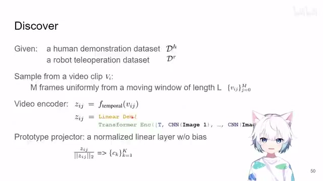
00:03:06–00:03:23 · 画面 022首先这个 discovery 阶段，我们来看看我们现在手头有的数据集有哪些，那正如我们之前说的，我们不仅有人类去操作机器这样的一个 expert data，同时我还有人类真正下手去把这个任务做出来的这样的一个数据集，我们都是把它只保留这个里面的视觉这个 video 这个信息
00:03:23–00:03:24 · 画面 023
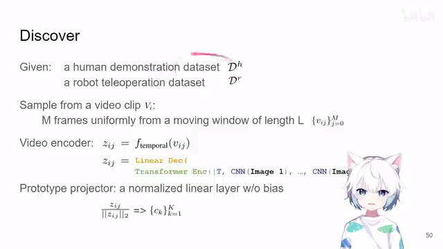
00:03:23–00:03:24 · 画面 02300:03:24–00:03:29 · 画面 024
00:03:24–00:03:29 · 画面 024那么然后呢，你就要在这个上面去做 self-study learning，那再一次我们要声明就是这两个数据集他们是没有任何标签的，我们也不知道他们具体是做了哪些任务啊，这个都是没有的，那么然后我们开始吧，那对于一个 episode 来说，它是一个长的视频，我们做的最标准的操作就是我从里面截出一个 video clip 来，这个 clip 呢
00:03:29–00:03:30 · 画面 025
00:03:29–00:03:30 · 画面 02500:03:30–00:04:20 · 画面 026
00:03:30–00:04:20 · 画面 026就是一小段的这个视频啊，那么它包含 m 帧，那这个时候呢，我们就要定义一个 video encoder，把这一个一小段的这个 video clip 啊，就是这个 video clip 给它提出一个 representation 来，最终形成我们的一个 scale 啊一个 condition 也好，一个 feature 也好，不管你怎么叫吧，然后呢用它作为我们这个 imitation learning 的另外的一个条件，那么在这个过程中呢，作者设计了两个网络，一个是这个 video encoder，一个是这个 prototype projector，它们呢是一个集联的关系，我们一步步来看这个 video encoder，它本质上呢是一个 CNN 和 transformer 的组合
00:04:20–00:04:21 · 画面 027
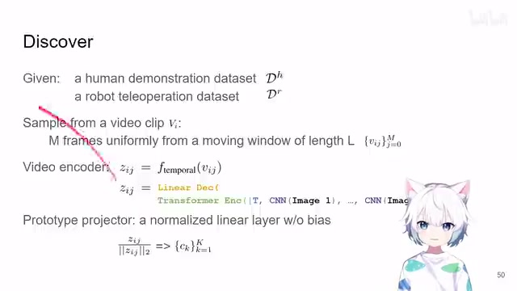
00:04:20–00:04:21 · 画面 02700:04:21–00:04:28 · 画面 028
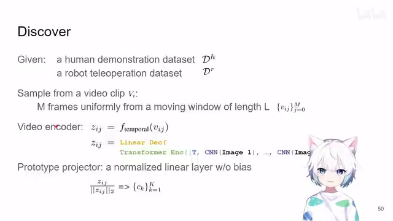
00:04:21–00:04:28 · 画面 02800:04:28–00:04:30 · 画面 029
00:04:28–00:04:30 · 画面 02900:04:30–00:04:39 · 画面 030
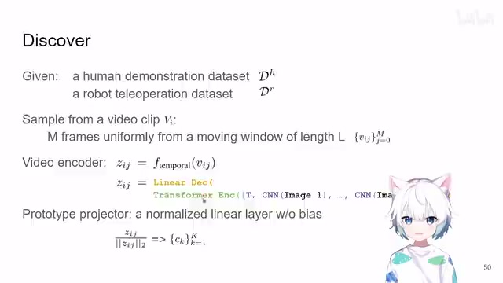
00:04:30–00:04:39 · 画面 030那么 CNN 呢用来提取图像的相对低级的这些特征，然后呢很多个图像的这个 feature 结合在一起送到 transformer 里面提取整个这一个图像序列也就是这一个视频的这个特征，那么这个呢是 video encoder，那么下面这个 prototype projector 呢就是一个 normalization 加一个这个矩阵的乘法
00:04:39–00:04:40 · 画面 031
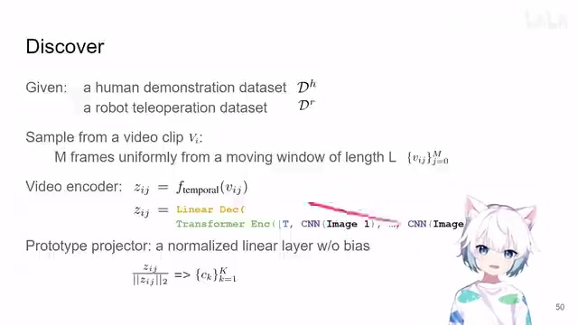
00:04:39–00:04:40 · 画面 03100:04:40–00:04:49 · 画面 032
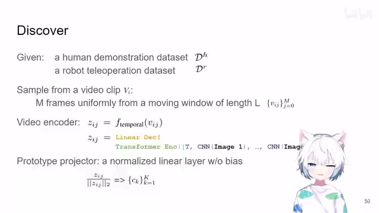
00:04:40–00:04:49 · 画面 03200:04:49–00:04:59 · 画面 033
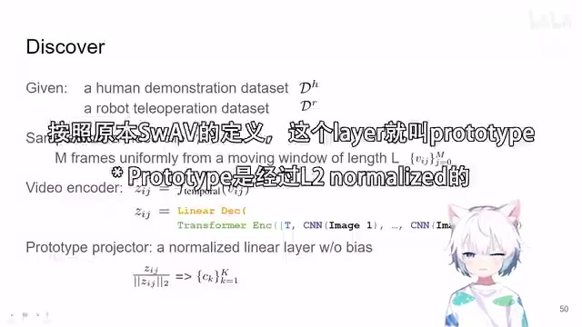
00:04:49–00:04:59 · 画面 033你要是想故弄玄虚一点呢，就叫这个 linear layer without bios。那么主要是这两个模块帮我们从一个 video clip 中提取一个 feature。
00:04:59–00:05:26 · 画面 034
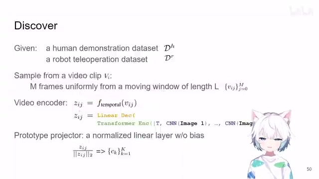
00:04:59–00:05:26 · 画面 034那这里呢有一个小的细节我们注意，就是我们一开始从每张图像提完 feature 之后，他们每一张图像有一个 token 嘛，相当于把这一串图像的 token 结合起来形成一个序列，在扔给 transformer 之前，我这里要额外加一个 token。那么这个 token 呢，就像 vit 里面的这个 classification token 一样，最终呢我们是希望所有的这些其他 token 的信息都被整合到这一个 token 里面，然后呢我们
00:05:26–00:05:27 · 画面 035
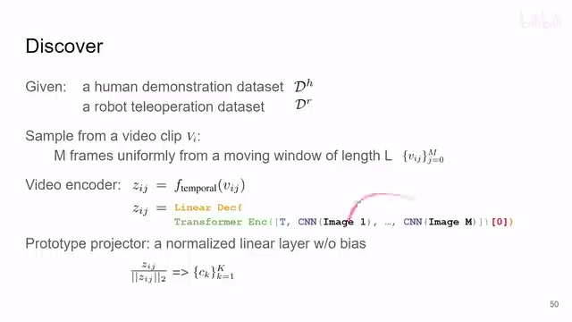
00:05:26–00:05:27 · 画面 03500:05:27–00:05:35 · 画面 036
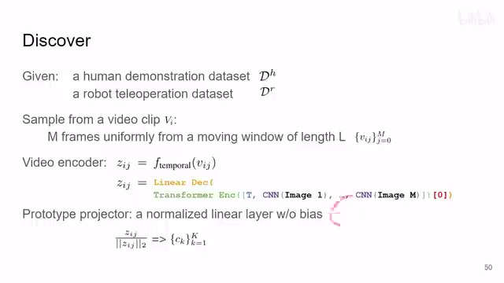
00:05:27–00:05:35 · 画面 036只取这一个 token 再往下做这个 linear projection，再送到下面的这个 prototype projector 里面。那么这个呢是本文作者的 video encoder 的设计。那么有了这个网络呢，我们就要开始训练了。那么下面的问题呢就是，我要应该用什么样的 loss 去把这个网络给它训练出来。这里呢作者也不藏着掖着，老实人直接就是结合了现在已经有的这些成熟的技术。
00:05:35–00:05:38 · 画面 037
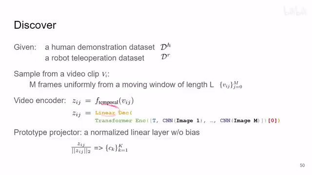
00:05:35–00:05:38 · 画面 03700:05:38–00:05:49 · 画面 038
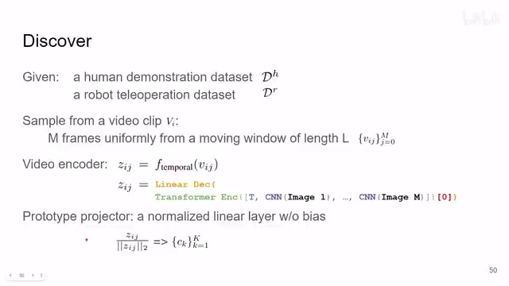
00:05:38–00:05:49 · 画面 03800:05:49–00:05:51 · 画面 039
00:05:49–00:05:51 · 画面 03900:05:51–00:06:00 · 画面 040
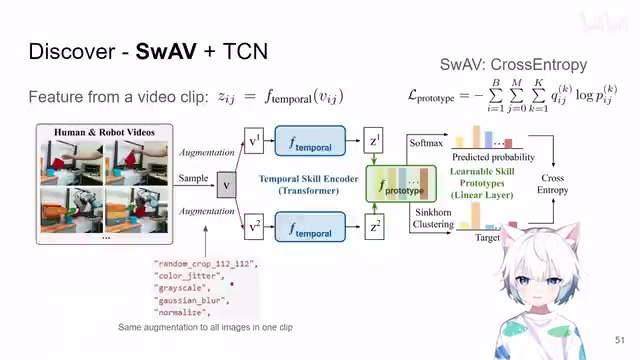
00:05:51–00:06:00 · 画面 040比如说最简单的这个，我们很久以前介绍过的这个 SWAV，基于这个 class turning 的一种 contrastive learning 的这样一种方法。那本质上呢就是你的一个图像也好，一个 video 也好，它经过了 augmentation 之后得到两个不同的这个图像，它们虽然长的是不太一样的，但是呢它们代表的语义信息应该是相同的。因此呢你在提完 feature 之后
00:06:00–00:06:01 · 画面 041
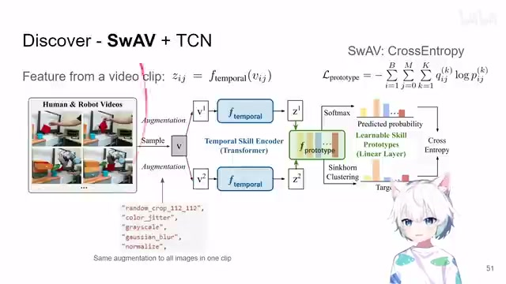
00:06:00–00:06:01 · 画面 04100:06:01–00:06:34 · 画面 042
00:06:01–00:06:34 · 画面 042那么这两个 feature 也应该是相似的。那么只不过它区别于之前的方法，比如说这个 simclear，它为什么是 clustering based 呢，是因为最后呢它经过了这样的一个 prototype。这个 prototype 呢你可以把它理解为是一种 kernel 也好，它本质上就是一个矩阵的乘法。那么乘出来之后呢，每一个 instance
00:06:34–00:06:35 · 画面 043
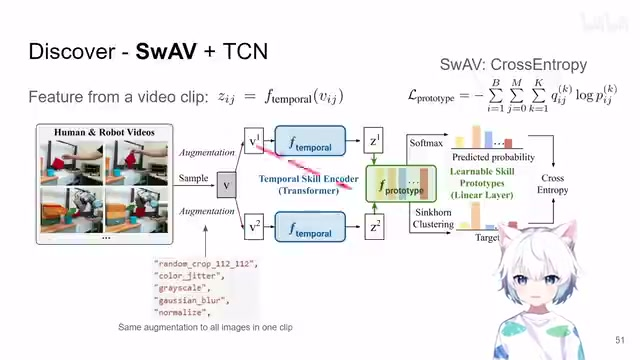
00:06:34–00:06:35 · 画面 04300:06:35–00:07:28 · 画面 044
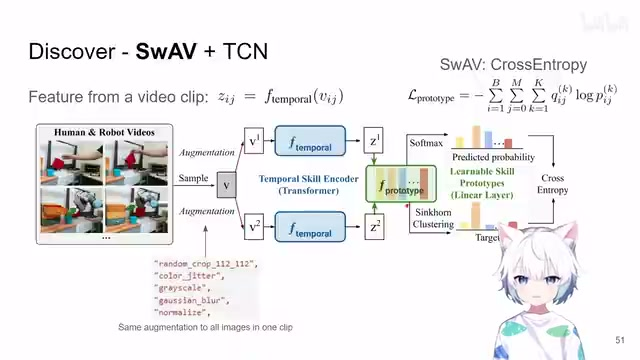
00:06:35–00:07:28 · 画面 044对应的这个 feature 它是表示的说这个 instance 和你这个 prototype 和每一个 prototype 它的相似的程度。所以呢最后呢你把它理解成是一个分类的问题，也就是说我当前的这一个样本它跟哪一个 prototype 最相近。那么这样的一个结果，所以呢你用 softmax 去处理它。那么这个东西该和谁相似呢？另一方面你的另一个 video 它也做了这个 prototype 出来。这里呢作者用这个 synchrome clustering 给它整出来这么一个具体的这样一个目标，告诉你说你的上面这个 video 应该和下面这个目标相似。
00:07:28–00:07:29 · 画面 045
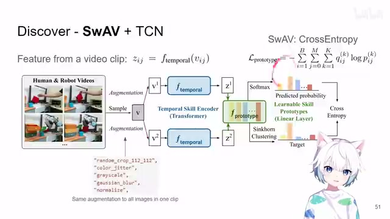
00:07:28–00:07:29 · 画面 04500:07:29–00:07:37 · 画面 046
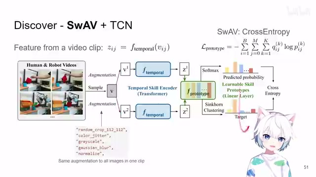
00:07:29–00:07:37 · 画面 046那么这样子你就可以用一个 cross entropy 这个 loss 给它传播回去。注意 loss 直走上面这一块传播回去。那么在反向传播的过程中，prototype 和前面的 encoder 都得到训练。那么这个是最简洁的 SWAV 的过程。那么里面详细的细节非常推荐你到原文查看，或者是去看我们非常古早的一个视频是这样的。
00:07:37–00:07:38 · 画面 047
00:07:37–00:07:38 · 画面 04700:07:38–00:07:40 · 画面 048
00:07:38–00:07:40 · 画面 04800:07:40–00:07:41 · 画面 049
00:07:40–00:07:41 · 画面 04900:07:41–00:07:42 · 画面 050
00:07:41–00:07:42 · 画面 05000:07:42–00:07:46 · 画面 051
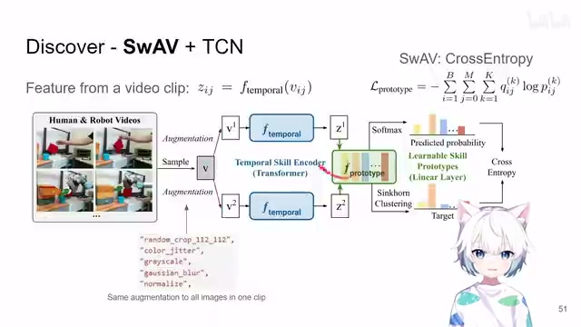
00:07:42–00:07:46 · 画面 05100:07:46–00:07:58 · 画面 052
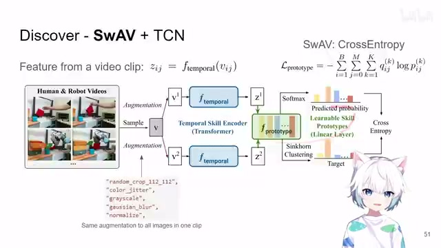
00:07:46–00:07:58 · 画面 052那么当然实际在操作的时候，你既然有两个 video 对吧，你 2 这个东西出来也可以走 softmax，而让这个 1 这个东西出来走到这个 Sinkhorn 一样的也是可以算一个 loss。那么实际计算的时候你其实是取得这两个 loss 的平均。
00:07:58–00:08:01 · 画面 053
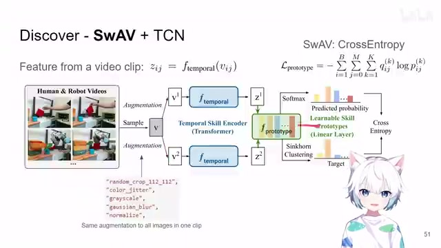
00:07:58–00:08:01 · 画面 05300:08:01–00:08:15 · 画面 054
00:08:01–00:08:15 · 画面 054那么当然你说它这个 augmentation 里面有什么对吧，这个列表里面一路做下去就好了。那一个注意的点就是我们进来的是一个 video clip，那这个 clip 里面的每一个 image 我在做 augmentation 的时候都是用的相同的 augmentation。这样子呢它们虽然都变得面目全非了，但也是一个非常 consistent 的这样的一个面目全非，这样子一个 augmentation 的过程。那么这个呢是已经有了 SWAV 的这么一个 loss。
00:08:15–00:08:17 · 画面 055
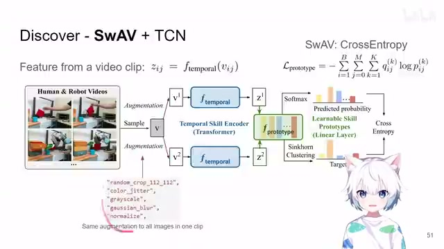
00:08:15–00:08:17 · 画面 05500:08:17–00:08:30 · 画面 056
00:08:17–00:08:30 · 画面 05600:08:30–00:08:35 · 画面 057
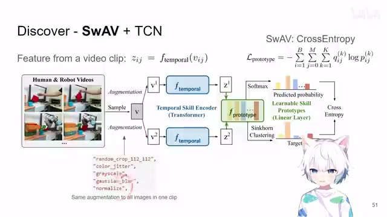
00:08:30–00:08:35 · 画面 05700:08:35–00:08:38 · 画面 058
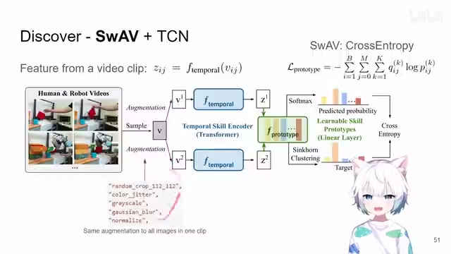
00:08:35–00:08:38 · 画面 05800:08:38–00:08:40 · 画面 059
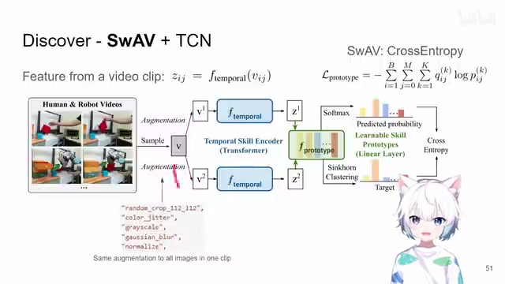
00:08:38–00:08:40 · 画面 05900:08:40–00:08:43 · 画面 060
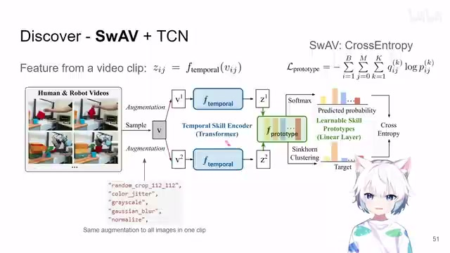
00:08:40–00:08:43 · 画面 060那么在这个 SWAV 的基础上呢，作者又额外引入了另外一个 LossTCN，就是 Time Contrastive Network。这个视频我们也是在很早的时候出过了。他的想法呢很简单，就是他的想法呢很简单，就是我一个 Episode 里面，我时间上靠得近的两帧，他们两个的这个 Embedding 应该相似，那我时间上靠得远的两帧，他的 Embedding 就应该不相似。
00:08:43–00:08:48 · 画面 061
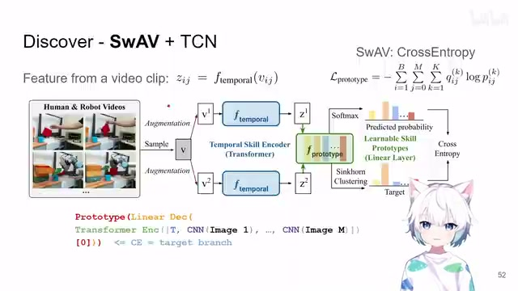
00:08:43–00:08:48 · 画面 06100:08:48–00:09:07 · 画面 062
00:08:48–00:09:07 · 画面 06200:09:07–00:09:09 · 画面 063
00:09:07–00:09:09 · 画面 063那么最后呢，用的是一个 influency 的 loss。那当然本文的情况呢，没有像这个 tcn 原文这样啊，那么说有 multiview 这些东西没有的。那么本文在实际操作的时候呢，就是我用一个 augmentation 的版本这样的一个 video，同一个长的 video 里面有很多个小的 video clip 嘛。那在这同一个 video 里面的不同的 video clip 之间啊，我去采一个出来。
00:09:09–00:09:16 · 画面 064
00:09:09–00:09:16 · 画面 06400:09:16–00:09:47 · 画面 065
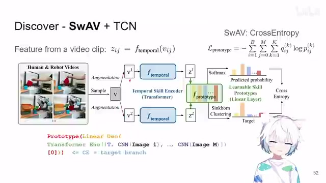
00:09:16–00:09:47 · 画面 065然后跟他近的这个 video clip 两个 representation 要相近啊，跟他远的时间上远的 video clip 两个 representation 要相互远离啊。作者的实现呢，这个 tcn 的实现呢，是非常简单直接的。
00:09:47–00:09:53 · 画面 066
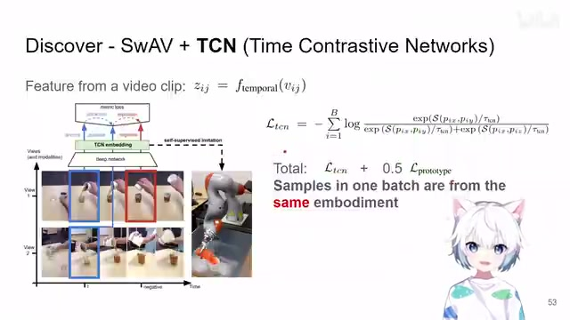
00:09:47–00:09:53 · 画面 066那么最后呢，你就把两个 loss 加起来就好了，prototype loss 权重 0.5 加个 tcn loss 一起做一个训练。这个呢，就是本文在这个 discover 环节用的这个自监督的这个 loss。你看都是现成的东西组合起来的而已。那注意这里实际训练的时候，因为我们虽然有两个数据集，但是呢，我训练的时候是从一个数据集里面采一个 batch。
00:09:53–00:09:56 · 画面 067
00:09:53–00:09:56 · 画面 06700:09:56–00:10:29 · 画面 068
00:09:56–00:10:29 · 画面 068训练，然后另一个数据集里面踩一个 batch 再训练。所以我每一个 batch 里面他们踩到的数据都是从一个数据集里面出来的，或者说就是按照作者的说法叫做从一个 embodyment 里面出来的，要么都是机器人的，要么都是人来演示的。那么拿到这个 loss，拿到了这个数据集，拿到这个网络，你就训练。最后训练出来的一个东西呢。
00:10:29–00:10:30 · 画面 069
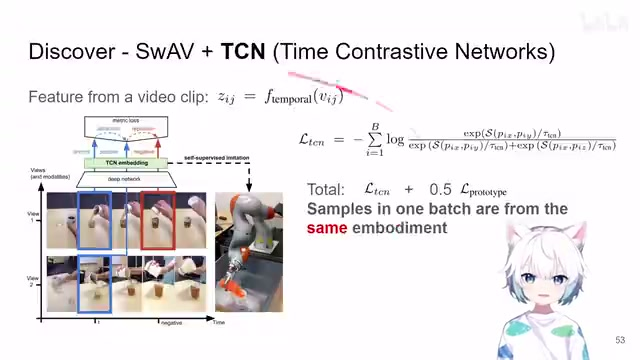
00:10:29–00:10:30 · 画面 06900:10:30–00:10:35 · 画面 070
00:10:30–00:10:35 · 画面 07000:10:35–00:10:43 · 画面 071
00:10:35–00:10:43 · 画面 071就是这个 temporal encoder 加上这个 prototype。那么有了它，你就可以把一个 video clip 变成了一个 embedding。那么下面的 imitation learning 呢，你就在这个 embedding 的基础上，相当于它是一个额外的 observation，拿着它一起去做标准的 imitation learning 就可以了。那么作者呢，也是这么干的。这里呢，作者说叫这个 scale condition imitation learning，相对于之前的传统的 imitation learning，它不仅依赖于这个 state。
00:10:43–00:10:44 · 画面 072
00:10:43–00:10:44 · 画面 07200:10:44–00:10:55 · 画面 073
00:10:44–00:10:55 · 画面 07300:10:55–00:11:00 · 画面 074
00:10:55–00:11:00 · 画面 07400:11:00–00:11:04 · 画面 075
00:11:00–00:11:04 · 画面 075同时呢，还依赖于这个 prototype。怎么产生 prototype？之前呢，这个 encoder 我们刚刚 pretrain 好了对吧。那么下面呢，作者只需要把这个 pretrain 好的 encoder 往数据集上一跑，那么每一个数据都能够产生这样的一个 skill。那其实相当于你原来有了这么一个 imitation learning 的这么一个 policy，你现在给他额外外置一个大脑，外置一个 encoder 对吧，把一个额外的信息给他灌进来，然后大家一起学习。
00:11:04–00:11:07 · 画面 076
00:11:04–00:11:07 · 画面 07600:11:07–00:11:12 · 画面 077
00:11:07–00:11:12 · 画面 07700:11:12–00:11:15 · 画面 078
00:11:12–00:11:15 · 画面 07800:11:15–00:11:35 · 画面 079
00:11:15–00:11:35 · 画面 079就是这么一个设计。那么所以理论上呢，你用任何一种 imitation learning 方法都可以。那么实际上呢，作者用的是这个 diffusion policy，这个我们之前也介绍过了。当然 diffusion policy 也是他们一个组里做出来的，所以用这个方法也挺合理的。
00:11:35–00:11:40 · 画面 080
00:11:35–00:11:40 · 画面 08000:11:40–00:11:52 · 画面 081
00:11:40–00:11:52 · 画面 081然后呢，你就可以高高兴兴的去学对吧。然后呢，当人类给一个新的视频过来的时候，当去想解决一个新的任务的时候，你就把这个新的演示的视频放到我们之前训好的这个 video encoder 里面解出来的一系列的 scale 交给我们的 policy 去执行就好了对吧。然后这个任务就完成了对吧？啊，那是有这么好的事情吗？理论上呢。
00:11:52–00:11:53 · 画面 082
00:11:52–00:11:53 · 画面 08200:11:53–00:12:06 · 画面 083
00:11:53–00:12:06 · 画面 08300:12:06–00:12:11 · 画面 084
00:12:06–00:12:11 · 画面 08400:12:11–00:12:22 · 画面 085
00:12:11–00:12:22 · 画面 085确实是应该就是可以这样做到的，但是实际上呢，如果你这样做的话，你会发现你的系统并不是非常的稳健，甚至说是一缝即碎的。为什么这样说呢？因为这其中一个很重要的问题就是，我人类做演示的时候，我的动作可能是快的，可能是慢的，它不一定是完美同步，你去机器人做的
00:12:22–00:12:39 · 画面 086
00:12:22–00:12:39 · 画面 086这个当前的这个状态，假如说你的这个前面的这个人类这个 demo 视频很快做完就完了，你机器人那半天还没有到位呢，你这个时候不断的去换这个 scale，那显然是不合适的同时呢，你机器人操作的时候有可能啊，第一次比如说这个开个灯这个情况下，第一次没开成，那我需要重新再做一遍，那但是这个时候你人类的 video 你如果单纯的按时间轴来对的话，已经跑到下一个步骤了
00:12:39–00:12:40 · 画面 087
00:12:39–00:12:40 · 画面 08700:12:40–00:13:09 · 画面 088
00:12:40–00:13:09 · 画面 088你时间轴就对不上了，代理指挥就失败了，对吧？那这也是一个很严重的问题。那么因此呢，为了解决这个问题，作者就需要提供一种方案，我在恰当的时候，恰当的这个状态下给出一个恰当的这个 skill，让我们产生的这个 action 呢是一个合理的 action
00:13:09–00:13:10 · 画面 089
00:13:09–00:13:10 · 画面 08900:13:10–00:13:15 · 画面 090
00:13:10–00:13:15 · 画面 09000:13:15–00:13:17 · 画面 091
00:13:15–00:13:17 · 画面 09100:13:17–00:13:20 · 画面 092
00:13:17–00:13:20 · 画面 09200:13:20–00:13:25 · 画面 093
00:13:20–00:13:25 · 画面 093那么这个呢就是 compose 的环节，就是当我们拿到一个新的任务的，没有见过的任务的这样的一个人类演示的这样的一个视频的时候，我们怎么样把这个视频里面的这个 skill 和我们真正执行进度的这个 skill 来给它对齐？那这里呢，作者提出的方法也很直接啊，就是我直接拿一个 transformer 嘛，这里呢，作者提出了一个叫做 skill alignment transformer，你前面整个视频里面的所有的 skill
00:13:25–00:13:26 · 画面 094
00:13:25–00:13:26 · 画面 09400:13:26–00:13:27 · 画面 095
00:13:26–00:13:27 · 画面 09500:13:27–00:13:29 · 画面 096
00:13:27–00:13:29 · 画面 09600:13:29–00:13:30 · 画面 097
00:13:29–00:13:30 · 画面 09700:13:30–00:13:33 · 画面 098
00:13:30–00:13:33 · 画面 09800:13:33–00:13:34 · 画面 099
00:13:33–00:13:34 · 画面 09900:13:34–00:13:40 · 画面 100
00:13:34–00:13:40 · 画面 10000:13:40–00:13:46 · 画面 101
00:13:40–00:13:46 · 画面 10100:13:46–00:13:48 · 画面 102
00:13:46–00:13:48 · 画面 10200:13:48–00:13:50 · 画面 103
00:13:48–00:13:50 · 画面 103给它列出来，这是一系列 token，然后呢，你当前的状态加上一个这个 state encoder，那么这个 state encoder 呢也是你后面要给这个 diffusion policy 用的这个 state encoder 啊，那么
00:13:50–00:13:52 · 画面 104
00:13:50–00:13:52 · 画面 10400:13:52–00:13:55 · 画面 105
00:13:52–00:13:55 · 画面 10500:13:55–00:13:56 · 画面 106
00:13:55–00:13:56 · 画面 10600:13:56–00:14:00 · 画面 107
00:13:56–00:14:00 · 画面 10700:14:00–00:14:04 · 画面 108
00:14:00–00:14:04 · 画面 108他提出来一个 token，那整个这一系列的这个 token 送到这个 transformer 里面，还是我只取第一个 token 送去一个 linear layer，那么你实际训练的时候，因为这是一整个 video 嘛，你就随机的在里面踩一个时间点，那在这个时刻的 observation 拿出来，然后呢去预测他应该选择的这个 scale 是什么，你也不需要额外的这个 label 去做
00:14:04–00:14:05 · 画面 109
00:14:04–00:14:05 · 画面 10900:14:05–00:14:07 · 画面 110
00:14:05–00:14:07 · 画面 11000:14:07–00:14:10 · 画面 111
00:14:07–00:14:10 · 画面 11100:14:10–00:14:17 · 画面 112
00:14:10–00:14:17 · 画面 11200:14:17–00:14:20 · 画面 113
00:14:17–00:14:20 · 画面 11300:14:20–00:14:27 · 画面 114
00:14:20–00:14:27 · 画面 114那经过这样一套流程下来呢，我们得到这样一个 transformer，你每次拿到一整个序列的这个 skill 啊，人类演示的这个 skill 和你当前的这个 observation，他预测出一个真正应该使用的 skill，送到我们的这个学的这个 policy 里面，最后呢产生这个 action，那么这个呢就是本文最后的流程，那这里呢一个例子就是啊，为什么我们真正的需要这个 alignment 对吧？你看到有的时候
00:14:27–00:14:29 · 画面 115
00:14:27–00:14:29 · 画面 11500:14:29–00:14:30 · 画面 116
00:14:29–00:14:30 · 画面 11600:14:30–00:14:35 · 画面 117
00:14:30–00:14:35 · 画面 11700:14:35–00:14:36 · 画面 118
00:14:35–00:14:36 · 画面 11800:14:36–00:14:40 · 画面 119
00:14:36–00:14:40 · 画面 11900:14:40–00:14:41 · 画面 120
00:14:40–00:14:41 · 画面 12000:14:41–00:14:45 · 画面 121
00:14:41–00:14:45 · 画面 12100:14:45–00:14:47 · 画面 122
00:14:45–00:14:47 · 画面 12200:14:47–00:14:49 · 画面 123
00:14:47–00:14:49 · 画面 12300:14:49–00:15:11 · 画面 124
00:14:49–00:15:11 · 画面 124这个机器人执行动作，它不如人类这么快啊，甚至我特意的开了灯之后再把灯关上，机器人需要重新的把这个灯再打开，那么这个时候呢，有了 alignment，它就相当于有了闭环的控制，它知道我现在这个状态下应该干什么了，那么我们来看到实验的部分啊，那肯定呢有这个模拟实验和真正的实验
00:15:11–00:15:40 · 画面 125
00:15:11–00:15:40 · 画面 125那这里的任务呢，就是在我们学完这个 policy 之后，按照这个演示的视频去做一个没有见过的这样的一个新的任务，那么当然在真实环境中你上人上去把各种任务做了就好了，那在模拟环境中呢，作者用的是一个长得跟现在这个机器人差很多的这样一个机器人去把这个任务做了，来创造这个 domain gap这个是作者的一个环境，那么然后来看到作者测试的东西，首先是这几个 baselineGCD 就是 Goal Condition Diffusion Policy，这个东西呢就是我不是 condition on 我们的这个 scale，我是 condition on 这个 go，但是它的这个 go 的选择呢有一点复杂，我不仅是在时间上对应了我这个演示的视频，同时呢我还要在这个范围内找一个跟它最接近的这么一个图像
00:15:40–00:15:41 · 画面 126
00:15:40–00:15:41 · 画面 12600:15:41–00:17:24 · 画面 127
00:15:41–00:17:24 · 画面 127来做那么这个详细的呢？你可以看到他论文的具体的描述。那么当然这个 goal 的 embedding 呢，在之前训练的时候，我们跟着这个网络一起来训练的。那么第二个贝斯案呢，就是把这个 goal 的这个 embedding 从一个去训练的这么一个网络，换成一个已经 preserve 好的这么一个 tcn 啊，来看一下。那么再往下的这个 sql 的几个变种。
啊，标准的这个 x scale 拿掉这个 swav 这个 loss 之后这个性能。然后呢，还有这个是 nn compose，就是我拿到那个 lineman transformer 啊，我只是用。这个图像的 embedding 跟我 demonstration 里面的这个 embedding 去找他的最近邻找他相似的对应的这个 scale 作为我这个 scale 的 condition 啊只是这样做那我们来看到作者测试的环境那首先就是我演示的视频呢是在相同的环境下相同的机器人啊去做一个没有见过的任务这是他们的成功率那么你看到这个时候呢 go condition policy
那么因为这个 policy 就是在这个 domain 里面训练的嘛，所以呢，他的性能呢，也是相对可以的啊。这是他们的性能成功率啊。那么再往下呢，我们的演示视频变成了 cross embodiment，就是换一个人，换一个机器人来给他演示。那这个时候 go condition policy 就就挂掉了啊，他他就他就没有见过这个东西吗，他就不能会一点。那但是后面的这些列呢，表示的是这个 demonstration。
00:17:24–00:17:25 · 画面 128
00:17:24–00:17:25 · 画面 12800:17:25–00:18:06 · 画面 129
00:17:25–00:18:06 · 画面 129这个视频的这个 prompt 视频的它的播放的速度。你可以看到呢，随着它这个演示的加速，你的这个 prompt 视频和你机器人的这个操作它越发的割裂。整体来看，大家的成功率都是下降的。这个时候，特别是你的这个 nearly sniper 最近邻这个东西，它下降就很厉害。但是本文因为有了这个 alignment transformer 它的加持，所以说呢，它的这个成功率还是相对稳定的。这是这个，那么真实世界中的这个测试呢，也是大差不差。
00:18:06–00:18:12 · 画面 130
00:18:06–00:18:12 · 画面 130感兴趣的朋友呢，非常推荐你去原文查看它详细的这个实验配置。那么这个是它最主要的实验的部分。那当然后面还有 ablation，你包括这个 prototype 选多少这个东西，其实不是特别的敏感。但是最有意思的，我们来看到这个，如果把本文这个东西这个里面的这个 time contrastive networkTCN 这个东西拿掉，你看到性能迅速的下降。
00:18:12–00:18:16 · 画面 131
00:18:12–00:18:16 · 画面 13100:18:16–00:18:33 · 画面 132
00:18:16–00:18:33 · 画面 132那么当然还有一些实验我在这里就没有涉及了。感兴趣的朋友非常推荐你到原文去查看，去读他的代码，去看他网站上的视频是这个样子的。好的，那么以上就是我对这篇论文的一个非常快速的整理。那么感谢您的收看，请多多指点。
00:18:33–00:18:35 · 画面 133
00:18:33–00:18:35 · 画面 13300:18:35–00:18:49 · 画面 134
00:18:35–00:18:49 · 画面 13400:18:49–00:18:49 · 画面 135
00:18:49–00:18:49 · 画面 135转写与来源说明 · 0 个自动复核提示
保留 51 个原始语音片段，0 个片段触发自动复核提示。提示仅用于定位可能的术语、重复或识别问题，不等于已确认错误。
讲解画面为源视频截图（640×360），不是可编辑 PPT 文件。全片按每秒 2 帧扫描内容变化，逐步展开页保留；连续动画保留代表画面。清晰度受源视频限制。
原视频：paper/合集_2026-10-16_机器人学/[论文简析]XSkill Cross Embodiment Skill Discovery[2307.09955].mp4
SHA-256：f85dd816f668359de28f7126d2e88c6aaaaf4558e01a6d50d59efa5a9373e0ff
全文按视频语音与画面制作。原论文可从上方链接下载；完整资料包保留全文、原始逐字稿、字幕和校对记录。